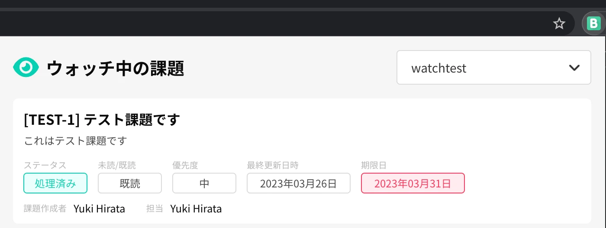

-
拡張機能のアイコンクリックでウォッチ中の課題一覧の表示を追加

- お知らせ覧に更新（メンションや担当変更など）があった場合に通知する機能を追加
- ウォッチの通知、お知らせの通知のオンオフを切り替えられるように変更
（例えば両方オフにして拡張機能のアイコンクリックでウォッチ中の課題一覧のみを確認したい時とか）
-
更新の取得方法の変更によりBacklog本来のウォッチ機能を流用するように処理を変更
v1.3.0.17 から v2.0.0 へアップデートされた方はウォッチ機能変更のため
オプション画面からスペース情報の再設定とBacklogから再度ウォッチのほう宜しくお願い致します。
- ウォッチしたい（通知させたい）課題数の上限を増加（Backlog側のウォッチ機能に依存するため上限は無い）
- 複数件通知が届いていた場合、どれか一つをクリックすると全部の通知のURLが開いてしまっていたため個別に開くように修正
- オプション画面のデザイン変更